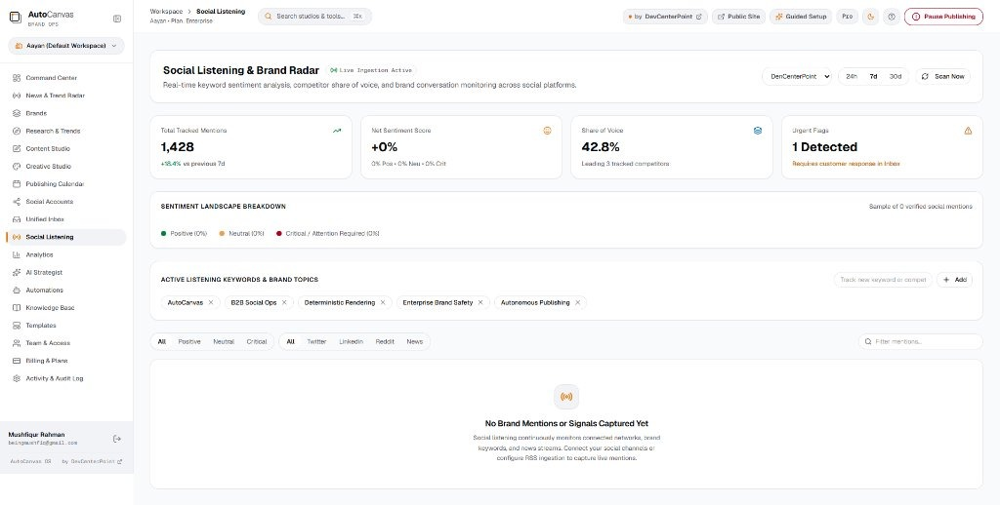

AUTOCANVAS OS v2.0 • LIVE PARITY
BRAND SAFETY & COMMUNITY INTELLIGENCE
Automation with
accountability.
Real-time keyword sentiment tracking, competitor share of voice, and an instant 1-click publishing circuit breaker.
✓
Urgent Flags for review in Unified Inbox
✓
Real-time competitor share of voice metrics
✓
1-Click Safety Pause halts all dispatches
autocanvas.devcenterpoint.com/workspace/social-listening
